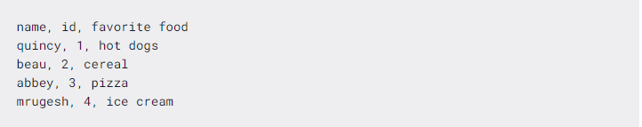
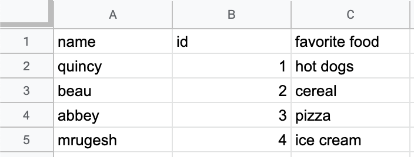

CSV简单的读取
CSV代表Comma Separated Values。CSV文件是一种纯文本文件，用于存储表格和电子表格信息。内容通常是由文本、数字或日期组成的表格。使用将数据存储在表中的程序可以轻松导入和导出CSV文件。
CSV文件格式
通常CSV文件的第一行包含表格列标签。后面的每一行表示表中的一行。逗号分隔行中的每个单元格，这就是名称的来源。
下面是一个CSV文件的示例。
正常txt文本打开（程序读取的形式）
电子表格形式
其实读取csv文件就是读取正常的字符串文件，就是记住csv格式
每一行的每个对象之间用逗号分割，行与行之间就是换行符，不用逗号，塔防游戏就用来存放地图瓦片数据
直接根据实例解释
bool load(const std::string& path)
{
std::fstream file(path);
if (!file.good())return false;
TileMap tile_map_temp;
int idx_x = -1, idx_y = -1;
std::string str_line;
while (std::getline(file, str_line))
{
str_line = trim_str(str_line);
if (str_line.empty())
continue;
idx_x = -1, idx_y++;
tile_map_temp.emplace_back();
std::string str_tile;
std::stringstream str_stream(str_line);
while (std::getline(str_stream,str_tile,','))
{
idx_x++;
tile_map_temp[idx_y].emplace_back();
Tile& tile = tile_map_temp[idx_y].back();
load_tile_from_string(tile, str_tile);
}
}
file.close();
if (tile_map_temp.empty() || tile_map_temp[0].empty())
return false;
tile_map = tile_map_temp;
generate_map_cache();
return true;
}
getline(file, str_line)
一行一行读取csv文件，读入string类，一行的内容指导换行符，为了保证读取争取必须删除最后的的可能存在的空格
std::string trim_str(const std::string& str) { size_t begin_idx = str.find_first_not_of(" \t"); //该函数时返回第一个不在提供字符串的字符索引 if (begin_idx == std::string::npos) //npos表示查询越界全空，返回空字符串 return ""; size_t end_idx = str.find_last_not_of(" \t"); //找到最后的一个不是换行或者空格 size_t idx_range = end_idx - begin_idx + 1; //计算有效字符串的范围 return str.substr(begin_idx, idx_range); //截取需要的字符串 //“2/2,3/2,3/2 ”->处理后“2/2,3/2,3/2”(空格没了) }然后依次以逗号为分割符依次读取每一个瓦片数据
while (std::getline(str_stream,str_tile,','))
然后瓦片又以“/”为分隔符读取
while (std::getline(str_stream, str_value, '\\')) //从str_stream中逐个读取到str_value,，然后去转换